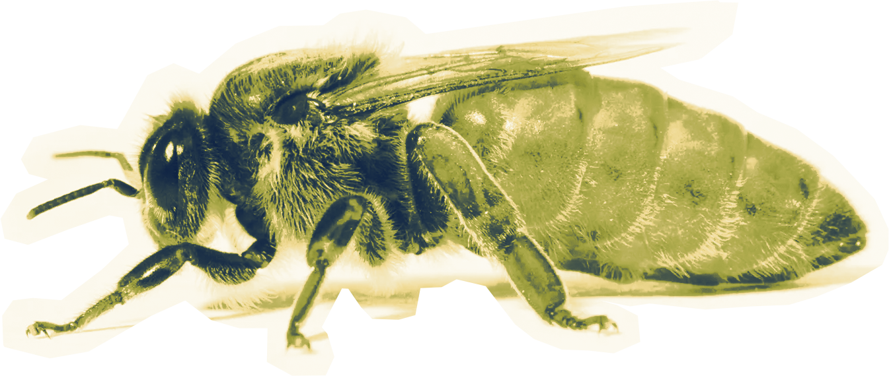
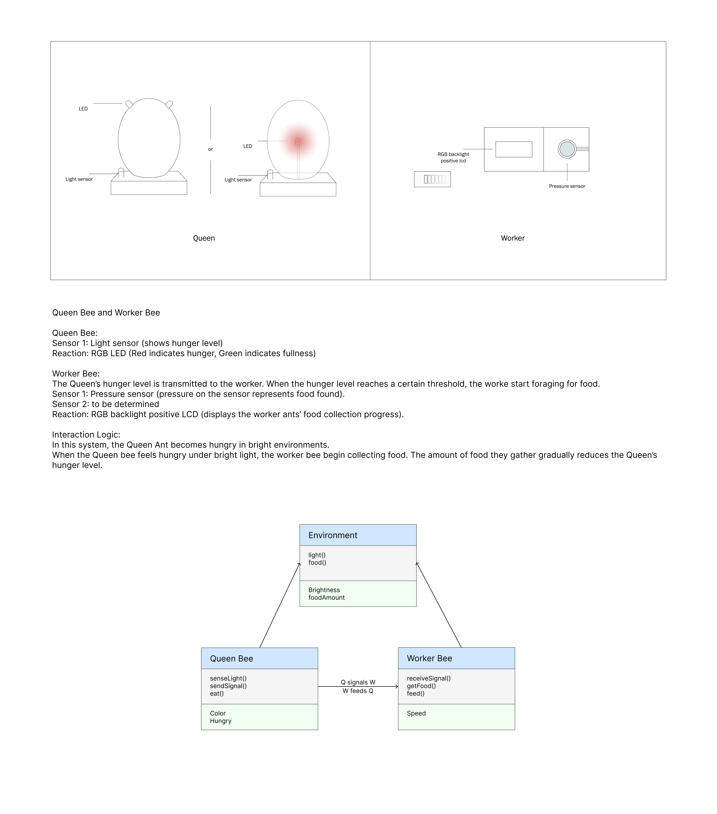
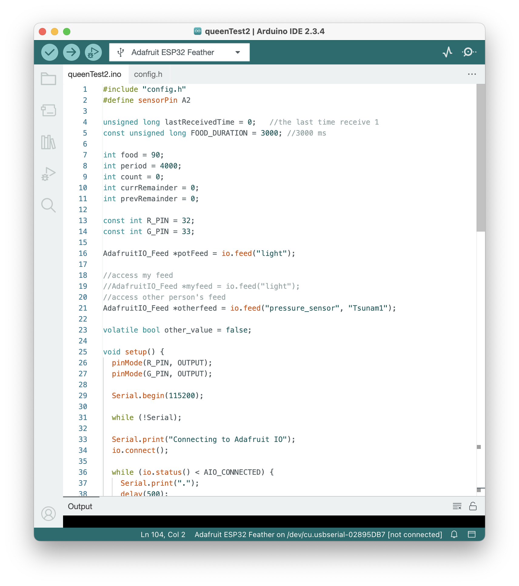
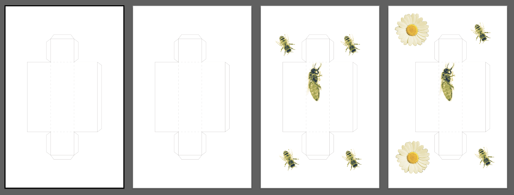
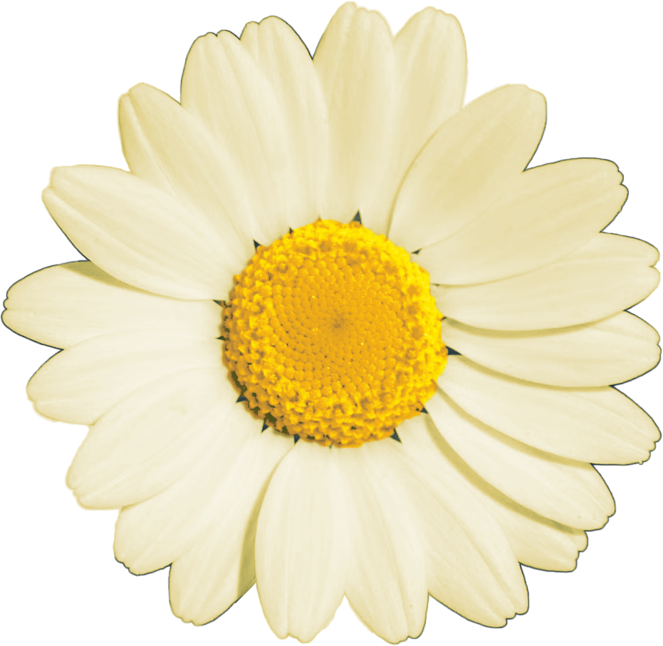

In our concept, these two creatures are like the queen bee and worker bee. I'm responsible for the queen bee part.

The ArduinoIDE code for the queen bee:
#include "config.h"
#define sensorPin A2
unsigned long lastReceivedTime = 0; //the last time receive 1
const unsigned long FOOD_DURATION = 3000; //3000 ms
int food = 90;
int period = 4000;
int count = 0;
int currRemainder = 0;
int prevRemainder = 0;
const int R_PIN = 32;
const int G_PIN = 33;
AdafruitIO_Feed *potFeed = io.feed("light");
//access my feed
//AdafruitIO_Feed *myfeed = io.feed("light");
//access other person's feed
AdafruitIO_Feed *otherfeed = io.feed("pressure_sensor", "Tsunam1");
volatile bool other_value = false;
void setup() {
pinMode(R_PIN, OUTPUT);
pinMode(G_PIN, OUTPUT);
Serial.begin(115200);
while (!Serial);
Serial.print("Connecting to Adafruit IO");
io.connect();
while (io.status() < AIO_CONNECTED) {
Serial.print(".");
delay(500);
}
Serial.println("");
Serial.println("Connected");
otherfeed->onMessage(handleMessage);
}
void loop() {
io.run();
int sensorValue = analogRead(sensorPin);
int val = map(sensorValue, 0, 4095, 0, 255);
val = constrain(val, 0, 255);
if (other_value && (millis() - lastReceivedTime > FOOD_DURATION)) {
other_value = false;
}
// int r = 255 - val;
// int g = val;
int valAdjusted = other_value ? constrain(val - food, 0, 255) : val;
int r = 255 - valAdjusted;
int g = valAdjusted;
analogWrite(R_PIN, r);
analogWrite(G_PIN, g);
// Serial.print("raw=");
// Serial.print(sensorValue);
// Serial.print(" val=");
// Serial.print(val);
// Serial.print(" R=");
// Serial.print(r);
// Serial.print(" G=");
// Serial.println(g);
delay(100);
count = millis();
currRemainder = count % period;
if(currRemainder < prevRemainder){
float current = val;
Serial.print("sending -> ");
Serial.println(current);
potFeed->save(current);
}
prevRemainder = currRemainder;
// delay(3000);
}
void handleMessage(AdafruitIO_Data *data){
// Serial.print("Received: ");
// Serial.println(data->value()); // data as text
int incoming = data->toInt();
Serial.print("Received: ");
Serial.println(incoming);
if (incoming == 1) {
other_value = true;
lastReceivedTime = millis(); //refresh3000ms
}
}
The code for the config.h file:
// You will find these on https://io.adafruit.com/
#define IO_USERNAME "YOUR_ADAFRUIT_IO_USERNAME"
#define IO_KEY "YOUR_ADAFRUIT_IO_PASSKEY"
//These will be your WiFi name and password
//Don't forget to change them if you move to another network
#define WIFI_SSID "WiFi_NETWORK_NAME"
#define WIFI_PASS "WiFi_NETWORK_PASSWORD"
#include "AdafruitIO_WiFi.h"
AdafruitIO_WiFi io(IO_USERNAME, IO_KEY, WIFI_SSID, WIFI_PASS);
Test if they can communicate with each other.

The diagram of boxes to cover the components as weel as to provide the look of bees.
